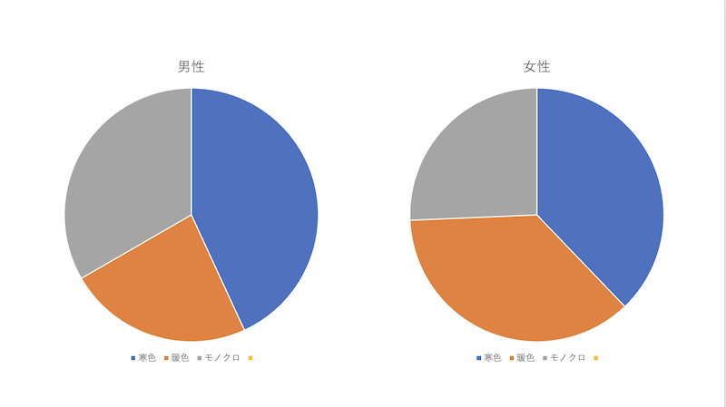

移動観察
◯観察内容
→男女の服装の暖色・寒色の割合について
◯観察経路
→大学を出て、マークイズの前を通り、マクドナルドランドマークプラザ店に行くまでの道のり
◯観察方法
→１人がスマホにて動画撮影、その他はカウンターで人数を数え、集計
◯結果
移動観察では、約９分間で男性５１名、女性７４名の計１２５名を調査した。

◯まとめ
・男性は女性に比べ、暖色を着る割合が圧倒的に少ない。
・女性は、暖色・寒色・モノクロの割合にあまり大きな差はない。
・秋だからか男女共にくすみカラーを取り入れていることが多い。
・同じモノクロでも男性と女性では着方が異なる場合が多い。
→男性：全身白黒 女性：小物で色を取り入れている など
◯感想
今回路上観察をしてみて、よくみてみると分かってくるようなことが多くあり、何も考えず歩くのではなく、
普段から意識して歩くことで、新たな発見や考えが生まれてくうるのだと感じた。
今回の観察では、寒くなったら暖色が着たくなる、寒色が着たくなるというような心理的なものもあるのかと予想していたが、
あまりそういったものは関係なく、ただ自分の着たいものを着ているといった印象だった。
どんな時でも自分の着たいものを着ることが一番なのだと感じた。